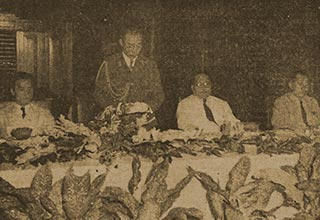

|
j
a v a s c r i p t |
October 23, 1942
After Hori's recent statement, Nakashima may have discarded the propaganda line about the Allies being finished and the war virtually over. His speech today admitted that Japan is "staking her national destiny for the successful completion of the Greater East Asia War."

In Manila Hotel (L to R):
Yuzo Yamato — Sec. Manila-Nippon Newspapermen's Assoc. Yoshio Nakashima — Chief Dept. of Disinformation F.M. Villanueva — Chairman, Filipino Press Assoc. Fukuichi Fukumoto — Osaka Mainichi Manila Bureau |
|
|
|
|